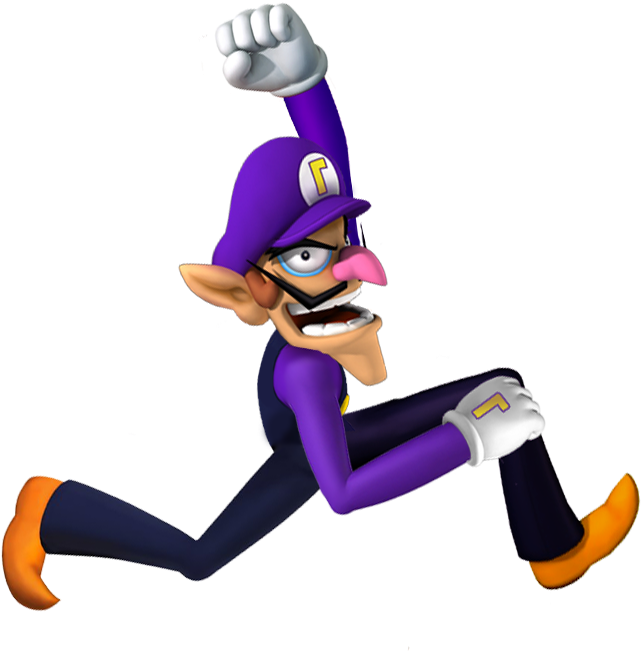

Bienvenue sur le jeu de l'awaluigi
Règles :
- S'emparer d'un maximum de graines, celui qui en a le plus GAGNE.
- Le terrain est divisé en 2 parties (la vôtre se trouve au sud) avec 6 trous chacune.
- Chaque joueur joue chacun son tour dans le sens contraire des aiguilles d'une montre, le premier joueur est tiré au hasard.
- Si la dernière graine semée tombe dans un trou de l'adversaire comportant déjà 1 ou 2 graines, le joueur capture les 2 ou 3 graines résultantes. Les graines capturées sont sorties du jeu.
- Lorsqu'un joueur s'empare de deux ou trois graines, si la case précédente contient également deux ou trois graines, elles sont capturées aussi.
Pour accéder au jeu :
Cliquez ici
Auteurs du site :
- Ilian Le Galliot
- Mathéo Kermorvant
- Titouan Le Goualec